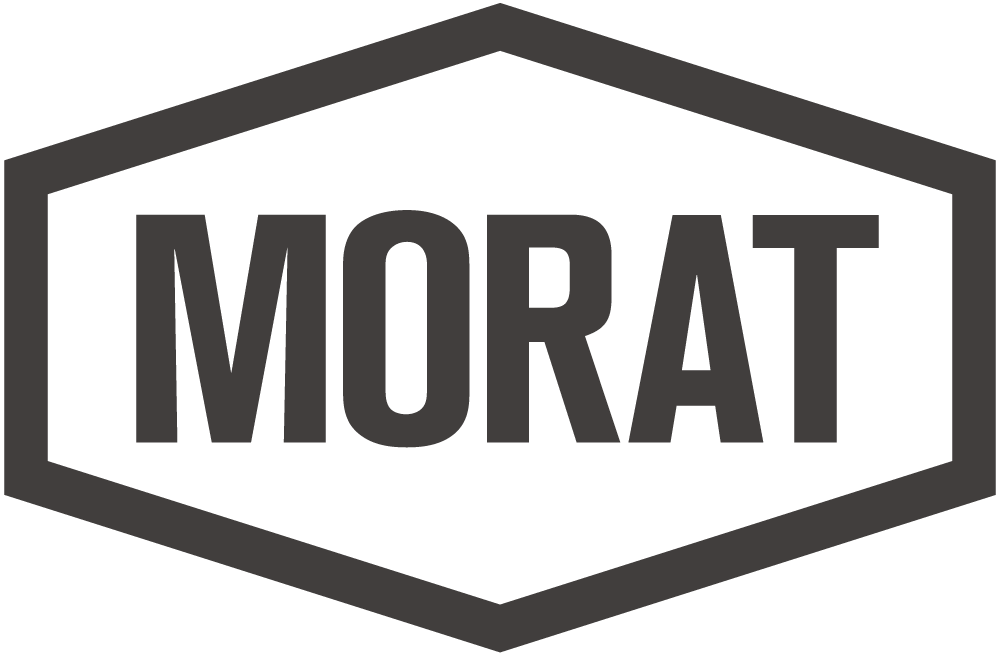
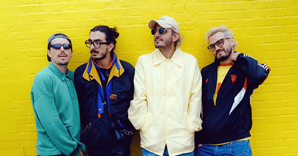
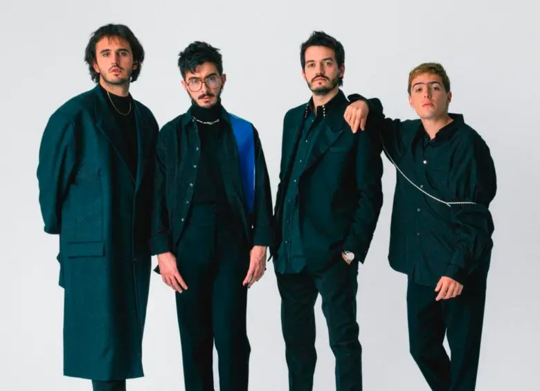

|
 |
Pagina de Fans de Morat |
Los Inicios: De la Escuela a "La Morat"
La historia de Morat comienza en Bogotá, Colombia, donde Juan Pablo Isaza, Juan Pablo Villamil y los hermanos Simón y Martín Vargas crecieron juntos. Se conocieron desde los cinco años mientras estudiaban en el Gimnasio de los Cerros. Originalmente se llamaban "Malta", pero eligieron "Morat" inspirados por la antigua hacienda donde realizaban sus primeros ensayos y forjaron su sonido único basado en el banjo y el pop-folk.


El Salto Internacional y "Mi Nuevo Vicio"
En 2015, su vida cambió cuando la cantante Paulina Rubio decidió colaborar con ellos en el tema "Mi Nuevo Vicio". La canción fue un éxito masivo en España y Latinoamérica. Poco después, lanzaron "Cómo Te Atreves", un himno que hoy supera los mil millones de reproducciones. En esta etapa, Martín Vargas se consolidó como el baterista oficial de la banda, cerrando la formación que conocemos hoy.
Evolución Musical y Legado Actual
Con álbumes como "Balas Perdidas", "Si ayer fuera hoy" y el reciente "Ya Es Mañana" (2025), Morat ha evolucionado de un sonido acústico a un pop-rock más maduro. Hoy son considerados la banda en español más importante del mundo, llenando estadios en todo el continente y demostrando que la música tocada con instrumentos reales sigue más viva que nunca en la era digital.
